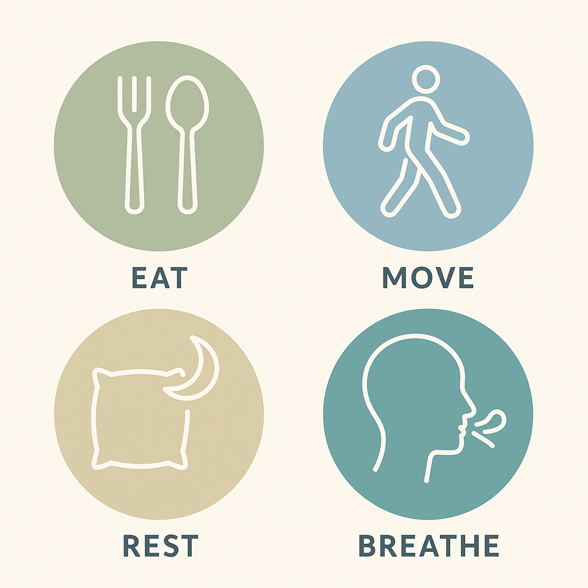

Perimenopause: Embracing the Gift of Your Second Spring üå∏
There's a season in every woman's life that is often misunderstood, but it's actually one of the most empowering times of transformation. In Chinese medicine, this stage is called the Second Spring, a name that reminds us that menopause (and the journey leading up to it) isn't an ending but a beginning.
Just as spring follows winter, this chapter invites you into renewal, growth, and fresh possibility. Your body is shifting, yes, but these changes are guiding you toward a season filled with wisdom, strength, and a deeper connection to yourself.
üåø What Is Perimenopause?
Perimenopause simply means "around menopause." It's the transition leading up to menopause, when your hormone levels — especially estrogen and progesterone — begin to fluctuate.
- It often begins in your 40s, but it can start earlier.
- It may last a few years up to a decade.
- Menopause begins only after 12 months without a period.
✨ If menopause is your Second Spring, then perimenopause is like the thawing of winter — sometimes stormy, sometimes sunny, but always moving you toward something new.
üå∏ When Change Feels Unsettling
Even with this beautiful perspective, the reality of change can sometimes feel overwhelming. Many women find themselves wondering:
- "Why are my periods suddenly so unpredictable?"
- "Why can't I remember the simplest things?"
- "Why do I wake up drenched in sweat at 3 a.m.?"
The first reaction is often worry: "Is something wrong with me?"
The answer is no. Nothing is "wrong." What you're experiencing is natural, and you are far from alone. In fact, more than half of the world's population will go through this phase. When you begin to talk with other women, you realize: this is a shared journey.
And that's the power of reframing perimenopause as your Second Spring. Instead of feeling like something is slipping away, you can recognize this stage as the beginning of a new season.
üåº Common Signs of Perimenopause
Every woman's experience is unique, but some common signs include:
- Irregular or heavier periods
- Hot flashes and night sweats
- Brain fog or forgetfulness
- Mood changes (irritability, sadness, anxiety)
- Trouble sleeping
- Vaginal dryness or discomfort during sex
- Changes in libido
- Body shifts (bloating, weight redistribution, joint aches)
üìå Gentle reminder: You may experience all, some, or very few of these. Your body has its own rhythm, and that's perfectly okay.
üåû Why Hormones Matter
Hormones are powerful messengers in the body. During perimenopause, as estrogen and progesterone rise and fall, they affect more than just your cycle. These shifts touch:
- ü¶¥ Bone strength
- ❤️ Heart health
- üò¥ Sleep quality
- ü߆ Brain clarity and memory
- üåà Emotional balance
This is why perimenopause can feel like it's affecting every part of life at once. The good news? Once your body adjusts to lower, steadier levels after menopause, the rollercoaster does calm down.

üå± Supporting Your Second Spring
The beauty of this stage is that small, kind choices can bring big relief. Think of it as tending a garden in springtime — the care you give now will help you flourish.
- Eat with care: Include calcium and vitamin D for your bones, and phytoestrogens (soy, flax, legumes) for gentle hormone support.
- Move with joy: Walk, dance, swim, or practice yoga, anything that keeps your body strong and your mood lifted.
- Rest deeply: Protect your sleep with bedtime rituals, cooler room temperatures, and limited late-night screen time.
- Breathe and center: Try meditation, tai chi, or even a few slow breaths when stress rises.
üå∫ The Emotional and Spiritual Side
Perimenopause isn't just about physical symptoms. It often arrives at a time when many women are juggling life transitions. Children growing up, parents aging, careers shifting.
No wonder emotions feel heightened. But remember: this stage is not about losing yourself. It's about becoming more of who you truly are.
That's why the Chinese name Second Spring is so inspiring. Just as spring represents rebirth, renewal, and fresh energy, this season invites you to rediscover yourself:
- üíú It's a reset button.
- üíú It's a chance to prioritize your needs.
- üíú It's an opportunity to embrace freedom, wisdom, and authenticity.
üëâ Instead of asking, "What's wrong with me?" try asking, "What is beginning within me?"
⚕️ When to Seek Support
While most changes in perimenopause are natural, it's wise to check in with a doctor if you notice:
- Very heavy or prolonged bleeding
- Bleeding between periods
- Periods lasting longer than 10 days
- Severe hot flashes or sweats
- New or worsening depression or anxiety
Seeking support is not weakness; it's self-respect.
üå∏ Embracing Your Second Spring
Perimenopause may feel like uncharted territory, but it's a shared journey, one that connects you to millions of women across the world.
It is not an ending. It is your Second Spring.
- A season of renewed energy üå±
- A season of self-discovery üåº
- A season of wisdom and freedom üå∏
At SecondSpring, we celebrate this transition and provide resources to help you thrive. Remember: your body isn't failing you. It's guiding you into a powerful new chapter.
Your Second Spring is waiting. Step into it with curiosity, compassion, and confidence.
Join our mailing list to get more insights on our app: https://namitamankad.myflodesk.com/monthly